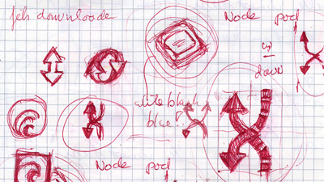
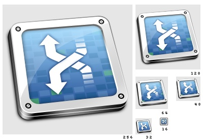

A while ago David Watanabe announced he was working on a new application. Soon after that announcement he contacted me for the design of a new icon.
Now I'm never going to pretend to have created "the" best icon for an application, I always create what I believe in and what the client likes as well. The amount of users for an application such as this one will be so diverse that I will never be able to satisfy them all. Having said that, Xtorrent is the kind of application where you just can not easily depict the application's subject and functionality because what the app does just isn't simple. So creating an icon for this app was challenging both because of the attention it already had because of Davids previous applications and because of the nature of the application.
Not so long ago I wrote an article about Obviousness of an icon where I said the following:
...in a lot of cases (the bigger apps, complex technologies) there simply isn't any easy or simple way to visualize what the app does. In those cases you might just have to come up with a more logo or pictogram like image. Those are the icons that heavily rely on their style.
So the treatment of this challenge was pretty clear from the start. First I looked at the already existing bittorrent icon landscape and quickly realized it was one that hadn't had much attention yet. The bittorrent project logo wasn't very usable in my opinion. Secondly I decided early on that I wanted to stay close to the look and feel of the Acquistion icon.
Bittorrent is a file sharing technology. Mostly people see that as being able to download files (leech), but one also has to make a file available to download (feed). One of the key strengths of bittorrent how ever is that every downloadable file consists of small pieces, and as soon as you have successfully downloaded one of the pieces of a file it can be shared to others. Dramatically increasing the speed at wich people can share something.
Fairly quickly I bumped into the thought to just stick with a simple arrow kind of logo type. I have always been a big fan of the iPod shuffle adds and the shuffle pictogram. And finally saw a way to create something slightly similar.
So from the above bits and pieces I deducted 3 aspects I wanted to be in the icon. 1) feed, 2) leech, 3) pieces. The result of this combination is the X logo type. I then combined that with a modular object that displays the Xtorrent pieces status view to create an actual appealing icon.